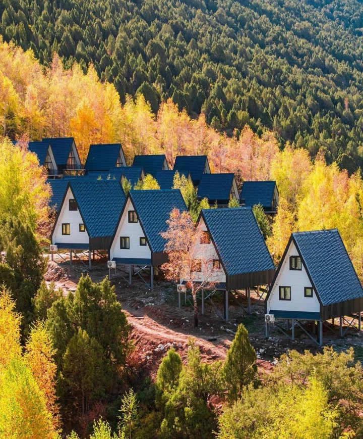
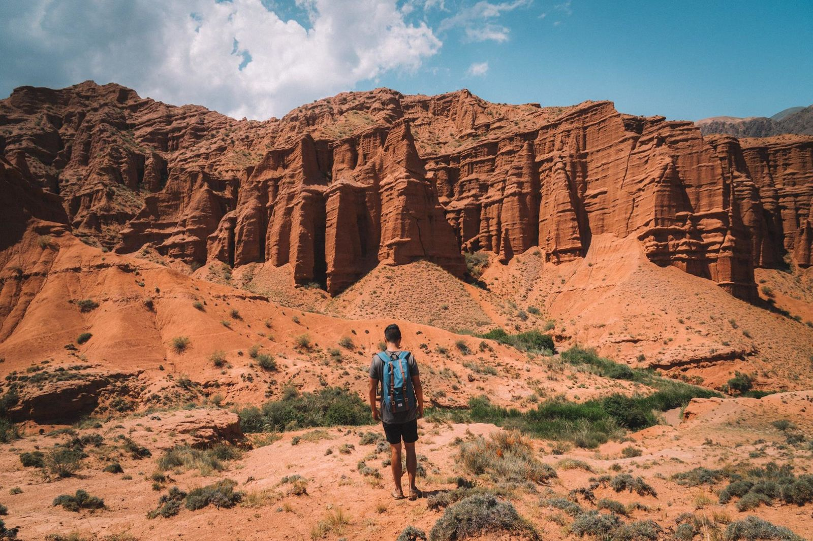

Бурана
Древняя минаретная башня и археологический комплекс — историческое сердце Чуйской области.

Ала-Арча
Красивый национальный парк с горными вершинами, ледниками и реками — рай для туристов.

Көңүрчекские каньоны
Удивительные скальные образования и каньоны с живописными видами, популярные для треккинга.